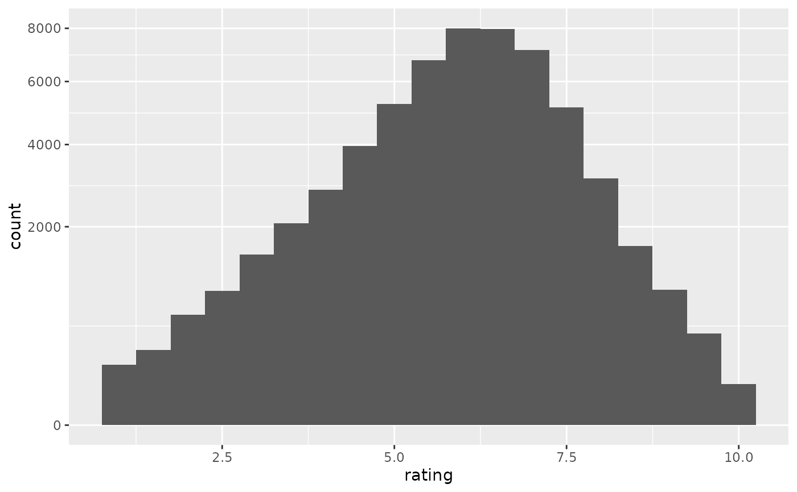
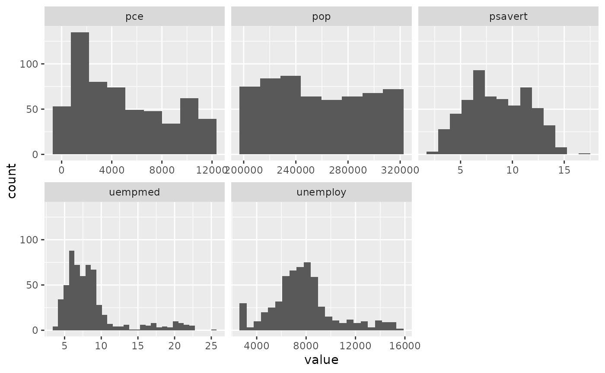
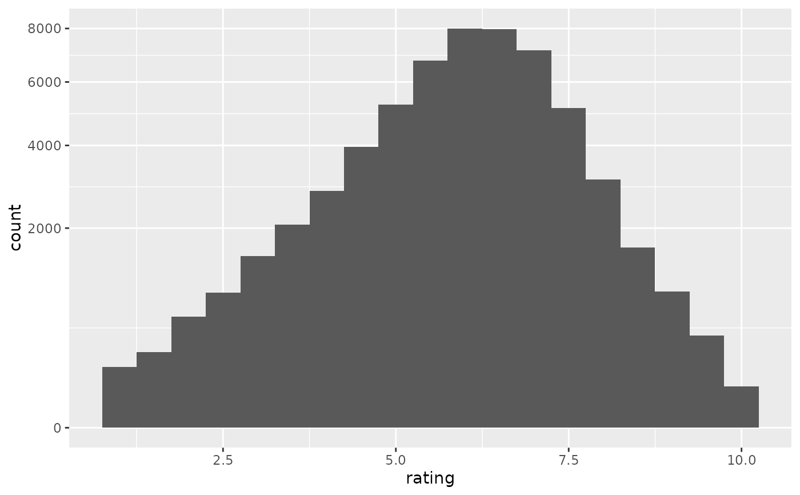
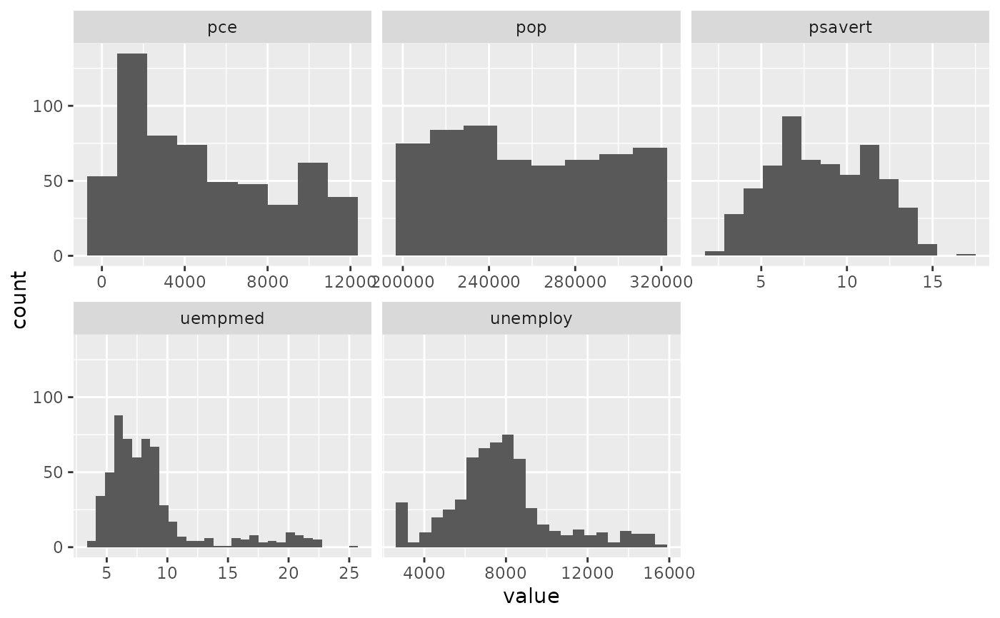

Histograms and frequency polygons
Source:R/geom-freqpoly.R, R/geom-histogram.R, R/stat-bin.R
geom_histogram.RdVisualise the distribution of a single continuous variable by dividing
the x axis into bins and counting the number of observations in each bin.
Histograms (geom_histogram()) display the counts with bars; frequency
polygons (geom_freqpoly()) display the counts with lines. Frequency
polygons are more suitable when you want to compare the distribution
across the levels of a categorical variable.
Usage
geom_freqpoly(
mapping = NULL,
data = NULL,
stat = "bin",
position = "identity",
...,
na.rm = FALSE,
show.legend = NA,
inherit.aes = TRUE
)
geom_histogram(
mapping = NULL,
data = NULL,
stat = "bin",
position = "stack",
...,
binwidth = NULL,
bins = NULL,
na.rm = FALSE,
orientation = NA,
show.legend = NA,
inherit.aes = TRUE
)
stat_bin(
mapping = NULL,
data = NULL,
geom = "bar",
position = "stack",
...,
binwidth = NULL,
bins = NULL,
center = NULL,
boundary = NULL,
breaks = NULL,
closed = c("right", "left"),
pad = FALSE,
na.rm = FALSE,
keep.zeroes = "all",
orientation = NA,
show.legend = NA,
inherit.aes = TRUE
)Arguments
- mapping
Set of aesthetic mappings created by
aes(). If specified andinherit.aes = TRUE(the default), it is combined with the default mapping at the top level of the plot. You must supplymappingif there is no plot mapping.- data
The data to be displayed in this layer. There are three options:
If
NULL, the default, the data is inherited from the plot data as specified in the call toggplot().A
data.frame, or other object, will override the plot data. All objects will be fortified to produce a data frame. Seefortify()for which variables will be created.A
functionwill be called with a single argument, the plot data. The return value must be adata.frame, and will be used as the layer data. Afunctioncan be created from aformula(e.g.~ head(.x, 10)).- position
A position adjustment to use on the data for this layer. This can be used in various ways, including to prevent overplotting and improving the display. The
positionargument accepts the following:The result of calling a position function, such as
position_jitter(). This method allows for passing extra arguments to the position.A string naming the position adjustment. To give the position as a string, strip the function name of the
position_prefix. For example, to useposition_jitter(), give the position as"jitter".For more information and other ways to specify the position, see the layer position documentation.
- ...
Other arguments passed on to
layer()'sparamsargument. These arguments broadly fall into one of 4 categories below. Notably, further arguments to thepositionargument, or aesthetics that are required can not be passed through.... Unknown arguments that are not part of the 4 categories below are ignored.Static aesthetics that are not mapped to a scale, but are at a fixed value and apply to the layer as a whole. For example,
colour = "red"orlinewidth = 3. The geom's documentation has an Aesthetics section that lists the available options. The 'required' aesthetics cannot be passed on to theparams. Please note that while passing unmapped aesthetics as vectors is technically possible, the order and required length is not guaranteed to be parallel to the input data.When constructing a layer using a
stat_*()function, the...argument can be used to pass on parameters to thegeompart of the layer. An example of this isstat_density(geom = "area", outline.type = "both"). The geom's documentation lists which parameters it can accept.Inversely, when constructing a layer using a
geom_*()function, the...argument can be used to pass on parameters to thestatpart of the layer. An example of this isgeom_area(stat = "density", adjust = 0.5). The stat's documentation lists which parameters it can accept.The
key_glyphargument oflayer()may also be passed on through.... This can be one of the functions described as key glyphs, to change the display of the layer in the legend.
- na.rm
If
FALSE, the default, missing values are removed with a warning. IfTRUE, missing values are silently removed.- show.legend
logical. Should this layer be included in the legends?
NA, the default, includes if any aesthetics are mapped.FALSEnever includes, andTRUEalways includes. It can also be a named logical vector to finely select the aesthetics to display. To include legend keys for all levels, even when no data exists, useTRUE. IfNA, all levels are shown in legend, but unobserved levels are omitted.- inherit.aes
If
FALSE, overrides the default aesthetics, rather than combining with them. This is most useful for helper functions that define both data and aesthetics and shouldn't inherit behaviour from the default plot specification, e.g.borders().- binwidth
The width of the bins. Can be specified as a numeric value or as a function that takes x after scale transformation as input and returns a single numeric value. When specifying a function along with a grouping structure, the function will be called once per group. The default is to use the number of bins in
bins, covering the range of the data. You should always override this value, exploring multiple widths to find the best to illustrate the stories in your data.The bin width of a date variable is the number of days in each time; the bin width of a time variable is the number of seconds.
- bins
Number of bins. Overridden by
binwidth. Defaults to 30.- orientation
The orientation of the layer. The default (
NA) automatically determines the orientation from the aesthetic mapping. In the rare event that this fails it can be given explicitly by settingorientationto either"x"or"y". See the Orientation section for more detail.- geom, stat
Use to override the default connection between
geom_histogram()/geom_freqpoly()andstat_bin(). For more information at overriding these connections, see how the stat and geom arguments work.- center, boundary
bin position specifiers. Only one,
centerorboundary, may be specified for a single plot.centerspecifies the center of one of the bins.boundaryspecifies the boundary between two bins. Note that if either is above or below the range of the data, things will be shifted by the appropriate integer multiple ofbinwidth. For example, to center on integers usebinwidth = 1andcenter = 0, even if0is outside the range of the data. Alternatively, this same alignment can be specified withbinwidth = 1andboundary = 0.5, even if0.5is outside the range of the data.- breaks
Alternatively, you can supply a numeric vector giving the bin boundaries. Overrides
binwidth,bins,center, andboundary. Can also be a function that takes group-wise values as input and returns bin boundaries.- closed
One of
"right"or"left"indicating whether right or left edges of bins are included in the bin.- pad
If
TRUE, adds empty bins at either end of x. This ensures frequency polygons touch 0. Defaults toFALSE.- keep.zeroes
Treatment of zero count bins. If
"all"(default), such bins are kept as-is. If"none", all zero count bins are filtered out. If"inner"only zero count bins at the flanks are filtered out, but not in the middle.
Details
stat_bin() is suitable only for continuous x data. If your x data is
discrete, you probably want to use stat_count().
By default, the underlying computation (stat_bin()) uses 30 bins;
this is not a good default, but the idea is to get you experimenting with
different number of bins. You can also experiment modifying the binwidth with
center or boundary arguments. binwidth overrides bins so you should do
one change at a time. You may need to look at a few options to uncover
the full story behind your data.
By default, the height of the bars represent the counts within each bin.
However, there are situations where this behavior might produce misleading
plots (e.g., when non-equal-width bins are used), in which case it might be
preferable to have the area of the bars represent the counts (by setting
aes(y = after_stat(count / width))). See example below.
In addition to geom_histogram(), you can create a histogram plot by using
scale_x_binned() with geom_bar(). This method by default plots tick marks
in between each bar.
Orientation
This geom treats each axis differently and, thus, can thus have two orientations. Often the orientation is easy to deduce from a combination of the given mappings and the types of positional scales in use. Thus, ggplot2 will by default try to guess which orientation the layer should have. Under rare circumstances, the orientation is ambiguous and guessing may fail. In that case the orientation can be specified directly using the orientation parameter, which can be either "x" or "y". The value gives the axis that the geom should run along, "x" being the default orientation you would expect for the geom.
Aesthetics
geom_histogram() uses the same aesthetics as geom_bar();
geom_freqpoly() uses the same aesthetics as geom_line().
Computed variables
These are calculated by the 'stat' part of layers and can be accessed with delayed evaluation.
after_stat(count)
number of points in bin.after_stat(density)
density of points in bin, scaled to integrate to 1.after_stat(ncount)
count, scaled to a maximum of 1.after_stat(ndensity)
density, scaled to a maximum of 1.after_stat(width)
widths of bins.
Dropped variables
weightAfter binning, weights of individual data points (if supplied) are no longer available.
See also
stat_count(), which counts the number of cases at each x
position, without binning. It is suitable for both discrete and continuous
x data, whereas stat_bin() is suitable only for continuous x data.
Examples
ggplot(diamonds, aes(carat)) +
geom_histogram()
#> `stat_bin()` using `bins = 30`. Pick better value with `binwidth`.
 ggplot(diamonds, aes(carat)) +
geom_histogram(binwidth = 0.01)
ggplot(diamonds, aes(carat)) +
geom_histogram(binwidth = 0.01)
 ggplot(diamonds, aes(carat)) +
geom_histogram(bins = 200)
ggplot(diamonds, aes(carat)) +
geom_histogram(bins = 200)
 # Map values to y to flip the orientation
ggplot(diamonds, aes(y = carat)) +
geom_histogram()
#> `stat_bin()` using `bins = 30`. Pick better value with `binwidth`.
# Map values to y to flip the orientation
ggplot(diamonds, aes(y = carat)) +
geom_histogram()
#> `stat_bin()` using `bins = 30`. Pick better value with `binwidth`.
 # For histograms with tick marks between each bin, use `geom_bar()` with
# `scale_x_binned()`.
ggplot(diamonds, aes(carat)) +
geom_bar() +
scale_x_binned()
# For histograms with tick marks between each bin, use `geom_bar()` with
# `scale_x_binned()`.
ggplot(diamonds, aes(carat)) +
geom_bar() +
scale_x_binned()
 # Rather than stacking histograms, it's easier to compare frequency
# polygons
ggplot(diamonds, aes(price, fill = cut)) +
geom_histogram(binwidth = 500)
# Rather than stacking histograms, it's easier to compare frequency
# polygons
ggplot(diamonds, aes(price, fill = cut)) +
geom_histogram(binwidth = 500)
 ggplot(diamonds, aes(price, colour = cut)) +
geom_freqpoly(binwidth = 500)
ggplot(diamonds, aes(price, colour = cut)) +
geom_freqpoly(binwidth = 500)
 # To make it easier to compare distributions with very different counts,
# put density on the y axis instead of the default count
ggplot(diamonds, aes(price, after_stat(density), colour = cut)) +
geom_freqpoly(binwidth = 500)
# To make it easier to compare distributions with very different counts,
# put density on the y axis instead of the default count
ggplot(diamonds, aes(price, after_stat(density), colour = cut)) +
geom_freqpoly(binwidth = 500)
 # When using the non-equal-width bins, we should set the area of the bars to
# represent the counts (not the height).
# Here we're using 10 equi-probable bins:
price_bins <- quantile(diamonds$price, probs = seq(0, 1, length = 11))
ggplot(diamonds, aes(price)) +
geom_histogram(breaks = price_bins, color = "black") # misleading (height = count)
# When using the non-equal-width bins, we should set the area of the bars to
# represent the counts (not the height).
# Here we're using 10 equi-probable bins:
price_bins <- quantile(diamonds$price, probs = seq(0, 1, length = 11))
ggplot(diamonds, aes(price)) +
geom_histogram(breaks = price_bins, color = "black") # misleading (height = count)
 ggplot(diamonds, aes(price, after_stat(count / width))) +
geom_histogram(breaks = price_bins, color = "black") # area = count
ggplot(diamonds, aes(price, after_stat(count / width))) +
geom_histogram(breaks = price_bins, color = "black") # area = count
 if (require("ggplot2movies")) {
# Often we don't want the height of the bar to represent the
# count of observations, but the sum of some other variable.
# For example, the following plot shows the number of movies
# in each rating.
m <- ggplot(movies, aes(rating))
m + geom_histogram(binwidth = 0.1)
# If, however, we want to see the number of votes cast in each
# category, we need to weight by the votes variable
m +
geom_histogram(aes(weight = votes), binwidth = 0.1) +
ylab("votes")
# For transformed scales, binwidth applies to the transformed data.
# The bins have constant width on the transformed scale.
m +
geom_histogram() +
scale_x_log10()
m +
geom_histogram(binwidth = 0.05) +
scale_x_log10()
# For transformed coordinate systems, the binwidth applies to the
# raw data. The bins have constant width on the original scale.
# Using log scales does not work here, because the first
# bar is anchored at zero, and so when transformed becomes negative
# infinity. This is not a problem when transforming the scales, because
# no observations have 0 ratings.
m +
geom_histogram(boundary = 0) +
coord_trans(x = "log10")
# Use boundary = 0, to make sure we don't take sqrt of negative values
m +
geom_histogram(boundary = 0) +
coord_trans(x = "sqrt")
# You can also transform the y axis. Remember that the base of the bars
# has value 0, so log transformations are not appropriate
m <- ggplot(movies, aes(x = rating))
m +
geom_histogram(binwidth = 0.5) +
scale_y_sqrt()
}

# You can specify a function for calculating binwidth, which is
# particularly useful when faceting along variables with
# different ranges because the function will be called once per facet
ggplot(economics_long, aes(value)) +
facet_wrap(~variable, scales = 'free_x') +
geom_histogram(binwidth = function(x) 2 * IQR(x) / (length(x)^(1/3)))

if (require("ggplot2movies")) {
# Often we don't want the height of the bar to represent the
# count of observations, but the sum of some other variable.
# For example, the following plot shows the number of movies
# in each rating.
m <- ggplot(movies, aes(rating))
m + geom_histogram(binwidth = 0.1)
# If, however, we want to see the number of votes cast in each
# category, we need to weight by the votes variable
m +
geom_histogram(aes(weight = votes), binwidth = 0.1) +
ylab("votes")
# For transformed scales, binwidth applies to the transformed data.
# The bins have constant width on the transformed scale.
m +
geom_histogram() +
scale_x_log10()
m +
geom_histogram(binwidth = 0.05) +
scale_x_log10()
# For transformed coordinate systems, the binwidth applies to the
# raw data. The bins have constant width on the original scale.
# Using log scales does not work here, because the first
# bar is anchored at zero, and so when transformed becomes negative
# infinity. This is not a problem when transforming the scales, because
# no observations have 0 ratings.
m +
geom_histogram(boundary = 0) +
coord_trans(x = "log10")
# Use boundary = 0, to make sure we don't take sqrt of negative values
m +
geom_histogram(boundary = 0) +
coord_trans(x = "sqrt")
# You can also transform the y axis. Remember that the base of the bars
# has value 0, so log transformations are not appropriate
m <- ggplot(movies, aes(x = rating))
m +
geom_histogram(binwidth = 0.5) +
scale_y_sqrt()
}

# You can specify a function for calculating binwidth, which is
# particularly useful when faceting along variables with
# different ranges because the function will be called once per facet
ggplot(economics_long, aes(value)) +
facet_wrap(~variable, scales = 'free_x') +
geom_histogram(binwidth = function(x) 2 * IQR(x) / (length(x)^(1/3)))
